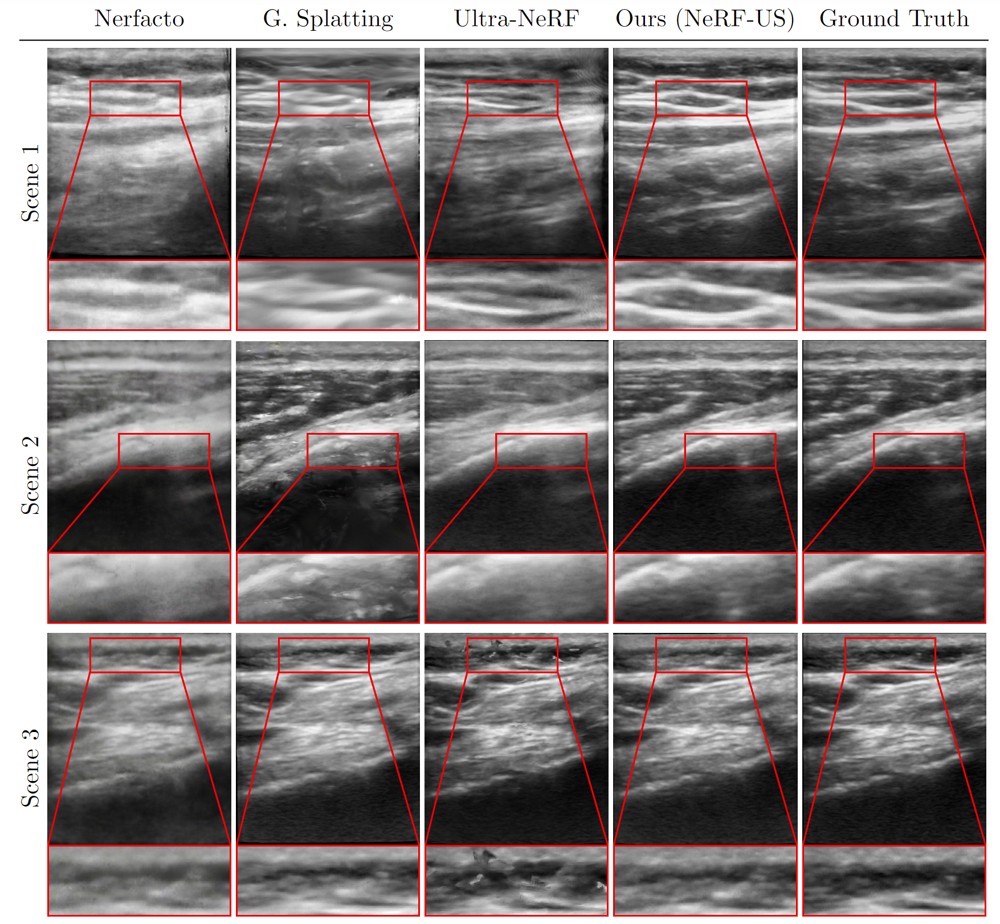

Novel view ultrasound renders from NeRF-US
Abstract
Motivation
| There are a few challenges common when using previous medical NeRF methods and standard methods: the need for high-quality, diverse datasets, capturing intricate details like tissue interface locations critical for medical diagnosis, accurately modeling transparent and reflective surfaces. There are quite a few NeRF artifacts that appear when using these methods in-the-wild. In contrast to this, our approach (as shown) produces artifact-free reconstructions with minor details accurately reconstructed. |  |
How does NeRF-US work?
Our goal is to produce a 3D representation given a set of ultrasound images taken in-the-wild and their camera positions. The first step of our approach relies on the training of a 3D diffusion model, which can serve as geometric priors for our NeRF model. This diffusion model produces an 32 x 32 x 32 occupancy grid. To create this diffusion model, we finetune the 3D diffusion model on a small dataset of voxels around the human knee generated synthetically.

We now train our NeRF model that takes in a 3D vector (denoting positions in 3D) and learns a 5D vector (attenuation, reflectance, border probabiltiy, scattering density, and scattering intensity). While training this NeRF, we run the outputs through the diffusion model and obtain guidance vectors for border probability and scattering density. These are added to the photometric loss. We finally train the NeRF with this final loss we calculated.

Visual Results
Comparisions with baselines.

Comparisions with baselines on depthmaps generated from the models.

Ultrasound in-the-wild Dataset
Here we show some instances of our new ultrasound in-the-wild dataset, we limit the visualizations of the dataset to the first 10 seconds of some of the scenes in our dataset.
Examples from our ultrasound in-the-wild dataset.
Citation
@article{turing1936computable,
title={On computable numbers, with an application to the Entscheidungsproblem},
author={Turing, Alan Mathison},
journal={Journal of Mathematics},
volume={58},
number={345-363},
pages={5},
year={1936}
}
Acknowledgements
This research was enabled in part by support provided by the Digital Research Alliance of Canada. This research was supported in part with Cloud TPUs from Google’s TPU Research Cloud (TRC). The resources used to prepare this research were provided, in part, by the Province of Ontario, the Government of Canada through CIFAR, and companies sponsoring the Vector Institute.